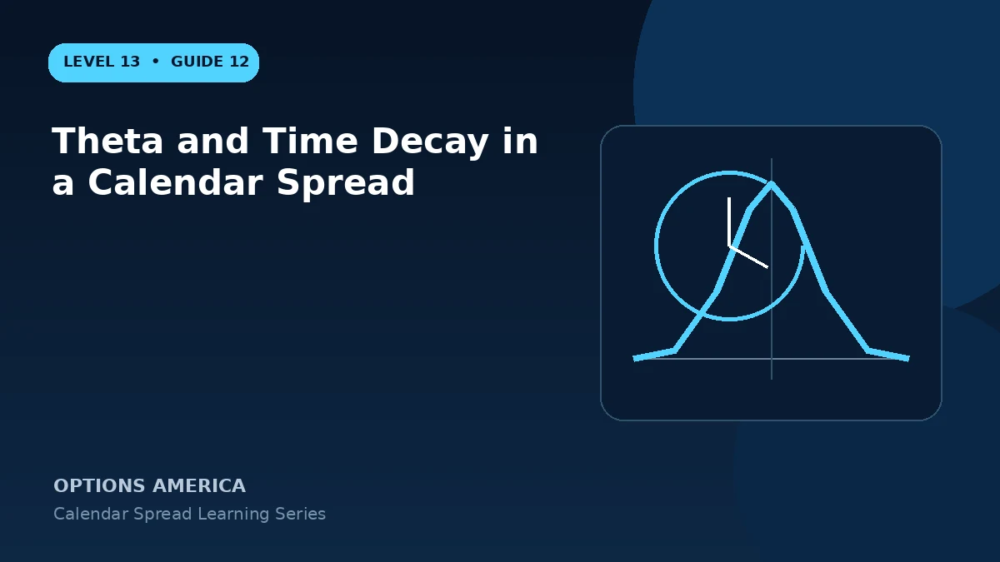

Learn how differential time decay creates calendar theta and when passing time helps or hurts the position.
Front-month acceleration
Short-dated extrinsic value tends to decay faster as expiration approaches. That decay is the calendar's central advantage only if price remains near the strike and other inputs do not move adversely.
Back-month preservation
The long option also decays, just usually more slowly. A large expiration gap can preserve more time value but costs a larger debit and may carry more vega.
Gamma tradeoff
Faster front decay comes with rising short gamma. A small underlying move near expiration can create a loss larger than several days of favorable theta.
After front expiration
If the short expires, the trader owns a standalone longer-dated option unless it is sold or another option is written. That new position has different theta and directional risk.
A practical example
The short option loses $8 of theoretical value in one day while the long loses $4, creating about $4 positive theta per spread before price and IV changes.
This simplified example uses selected price, time and volatility assumptions; live results will differ. Live option prices also reflect the underlying price, time decay, rates, dividends, liquidity and transaction costs. Greeks are theoretical estimates, not guarantees.
Frequently asked questions
Is theta collected as cash?
No. It is a model estimate reflected in prices.
Does the long option decay too?
Yes.
Why can positive theta still lose?
Gamma, delta and vega changes may dominate.
Continue the Calendar Spreads cluster
Explore related guides: Implied Volatility and Vega in Calendar Spreads · Calendar Spread Explained: Strategy, Risk and Reward · How to Choose Calendar Spread Expirations. For a structured sequence, use the free Level 13 – Calendar Spreads course.
Options involve risk and are not suitable for every investor. This material is educational and is not investment, tax or legal advice. Greeks are theoretical estimates, and contract terms and broker requirements can vary.